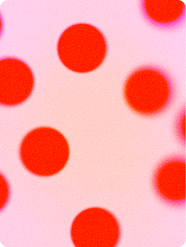
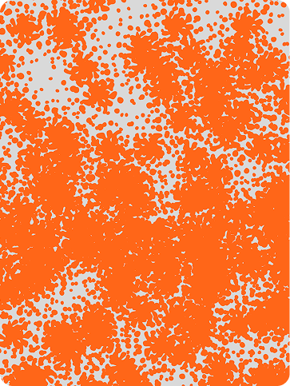

Experiences of Women in STEM
Behind every statistic in this article, there is a real person. The personal stories below come from women working across different STEM fields, sharing their own experiences with pay inequality, workplace bias, and the challenges of building a career in a male-dominated environment. They put a human face on the data - and are often more powerful than any research paper.
Kate Rotondo
A software engineer discovered she was earning significantly less than male colleagues in similar roles, highlighting ongoing issues of pay transparency and gender inequality in the tech industry.

Ulku Rowe
Ulku Rowe, a tech professional, discovered salary differences among colleagues in similar roles after gaining access to pay information. Her case highlights how lack of pay transparency can hide gender-based pay gaps even in STEM workplaces.

Jennifer Doudna
Jennifer Doudna, Nobel Prize-winning scientist and CRISPR co-developer, has spoken about the underrepresentation of women in scientific leadership.
Kate Rotondo
Kate Rotondo, a software engineer in the tech industry, discovered that she was earning significantly less than her male colleagues for similar work.
After comparing salaries with coworkers, she found that several men in her team were earning higher base salaries and additional compensation, even though they had comparable roles and responsibilities. In total, the difference reached around $25,000 in base pay, plus additional equity differences.When she raised the issue internally, her concerns were investigated, but the company concluded there would be no salary adjustment. This experience led her to question pay transparency and fairness in the workplace.
Eventually, she chose to leave the company. Later, she spoke publicly about her experience to highlight how difficult it can be to identify and challenge pay inequality when salaries are not transparent. Her story shows how the gender pay gap is often not obvious at first - and how it can persist even among highly qualified professionals in STEM fields.
Source: Inspired by reporting from The Muse (Sydney Pereira) and ABC News interviews with Kate Rotondo
Ulku Rowe
Ulku Rowe, a professional in the tech industry, publicly shared her experience with salary inequality after gaining access to information about pay differences within her workplace.
She discovered that colleagues in similar roles were earning higher salaries, despite comparable responsibilities and performance. This situation became visible only after discussions and increased awareness around pay transparency.
Her case is often used to illustrate how lack of salary transparency can hide gender-based pay differences, making it difficult for employees to recognise inequality without direct comparison.
It also highlights an important point: even in highly qualified STEM environments, pay differences can persist when salary structures are not open or clearly regulated.
Source: This case is based on publicly shared professional experience discussed in pay transparency research and media commentary.
Jennifer Doudna
Jennifer Doudna has become a leading figure in modern molecular biology. Her research has significantly transformed genetic engineering and medicine, contributing to one of the most important scientific breakthroughs of the 21st century.
Despite her success, Doudna has publicly addressed the ongoing lack of representation of women in scientific leadership and high-level research positions. She has highlighted that women in STEM often face structural barriers that can affect their career progression, including reduced access to research funding, fewer leadership opportunities, and lower visibility in major scientific projects.
Doudna's career reflects both achievement and inequality: while she ultimately received the Nobel Prize in Chemistry, she has emphasized that success stories like hers are still less common for women in science. Her experience illustrates that even at the highest levels of scientific recognition, gender imbalance remains present in research environments.
Her story is frequently referenced in discussions about gender equality in STEM, as it shows that underrepresentation is not only an entry-level issue, but also a challenge that persists in senior academic and leadership positions.
Source: Doudna, J. A., & Sternberg, S. H. (2017). A Crack in Creation: Gene Editing and the Unthinkable Power to Control Evolution. Nobel Prize in Chemistry 2020 - Jennifer Doudna profile (NobelPrize.org)
Further Readings About Gender Pay Gap in STEM
The gender pay gap in STEM has been studied from many different angles and by many different researchers around the world. The IZA Institute of Labor Economics alone has published dozens of studies on the topic. We present a few of the most relevant ones - each tackling a different dimension of the problem.
Gender Pay Gaps across STEM Fields of Study
Analyses how the gender pay gap varies across different STEM disciplines from the moment of graduation.
Go to paper ->Perceived Wages and the Gender Gap in STEM Fields
Explores how women's underestimation of STEM salaries shapes their career choices before they even enter the workforce.
Go to paper ->Comparative Advantage and Gender Gap in STEM
Examines how gender differences in perceived academic strengths push women away from STEM fields, contributing directly to their underrepresentation and the pay gap.
Go to paper ->Worldwide Communities for Women in STEM
For women working in or entering STEM, finding a community can make a real difference - whether that means getting advice on navigating a difficult workplace, finding a mentor, or simply knowing that others have faced the same challenges. A number of global networks exist for exactly this purpose, bringing together students, researchers, and professionals from across the world.